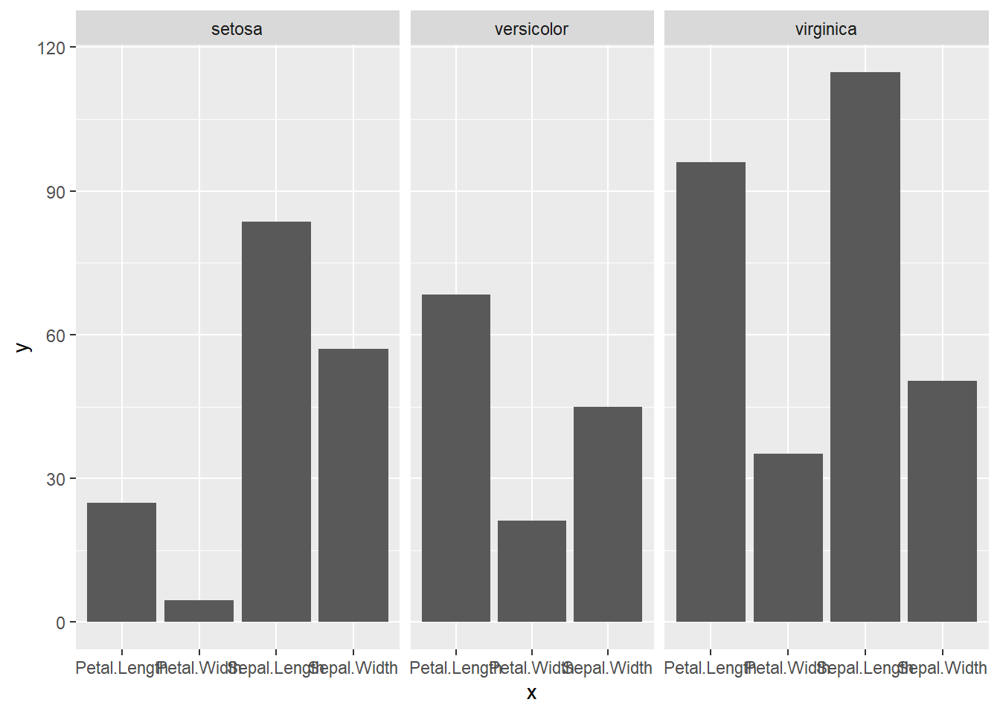

最初,我在工作的时候绘制柱状图分面时遇到了柱子不等长的情况，然后使用ggtree::facet_widths解决了。之后谷歌搜索ggplot2 facet width发现ggplot2 facet_grid已经支持可以改变分面宽度的参数。
## -- Attaching packages ------------------------------------------------- tidyverse 1.3.0 --## √ ggplot2 3.3.2 √ purrr 0.3.4
## √ tibble 3.0.3 √ dplyr 1.0.2
## √ tidyr 1.1.2 √ stringr 1.4.0
## √ readr 1.3.1 √ forcats 0.5.0## -- Conflicts ---------------------------------------------------- tidyverse_conflicts() --
## x dplyr::filter() masks stats::filter()
## x dplyr::lag() masks stats::lag()set.seed(2020)
iris_n <- slice_sample(iris,n = 50)
iris_long <- iris_n %>%
pivot_longer(cols = -Species,names_to = "x",values_to = "y")
iris_long <- iris_long %>%
filter(Species != "versicolor" | x != "Sepal.Length")
p <- ggplot(iris_long,aes(x,y)) + geom_col() +
facet_grid(cols = vars(Species),scales = "free_x")
p
可以看到这样有一个柱子宽度不等的情况,因为默认分面等宽，现在ggplot2可以通过添加参数space = "free_x,你可以看看这篇博客举得例子（之前也弄过一样的，所以链接过去作个记录），或者
## Registered S3 method overwritten by 'treeio':
## method from
## root.phylo ape 而这个函数源如下
## function (p, widths)
## {
## if (!is.null(names(widths))) {
## .panel <- panel_col_levels(p)
## w <- rep(1, length = length(.panel))
## names(w) <- .panel
## w[names(widths)] <- widths
## widths <- w
## }
## gt <- ggplot_gtable(ggplot_build(p))
## for (i in seq_along(widths)) {
## j <- gt$layout$l[grep(paste0("panel-1-", i), gt$layout$name)]
## gt$widths[j] = widths[i] * gt$widths[j]
## }
## return(ggplotify::as.ggplot(gt))
## }
## <bytecode: 0x0000000022b6ea48>
## <environment: namespace:ggtree>类似于stackoverflow上的解决方案，不过多了as.ggplot。
## t l b r z clip name
## 23 1 1 13 13 0 on background
## 1 8 5 8 5 1 on panel-1-1
## 2 8 7 8 7 1 on panel-1-2
## 3 8 9 8 9 1 on panel-1-3
## 4 6 5 6 5 3 off axis-t-1
## 5 6 7 6 7 3 off axis-t-2
## 6 6 9 6 9 3 off axis-t-3
## 7 9 5 9 5 3 off axis-b-1
## 8 9 7 9 7 3 off axis-b-2
## 9 9 9 9 9 3 off axis-b-3
## 10 8 4 8 4 3 off axis-l-1
## 11 8 10 8 10 3 off axis-r-1
## 12 7 5 7 5 2 on strip-t-1
## 13 7 7 7 7 2 on strip-t-2
## 14 7 9 7 9 2 on strip-t-3
## 15 5 5 5 9 4 off xlab-t
## 16 10 5 10 9 5 off xlab-b
## 17 8 3 8 3 6 off ylab-l
## 18 8 11 8 11 7 off ylab-r
## 19 4 5 4 9 8 off subtitle
## 20 3 5 3 9 9 off title
## 21 11 5 11 9 10 off caption
## 22 2 2 2 2 11 off tag可以看到name列panel开头的有三个，对应于p的三个分面，对应的l列分别为5，7，9